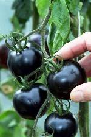
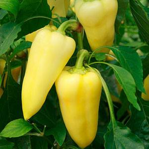
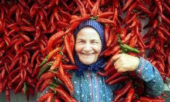
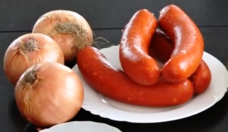
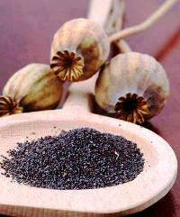
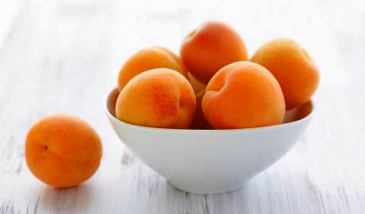

Es gibt wenige ungarische
K�chenspezialit�ten, die man in den Nachbarl�ndern nicht kennt,
nicht von anderen Nationen �bernommen
w�ren. Es ist sogar historisch belegt, wie und wann etwa die
eingeb�rgerten Gerichte Ihren Weg in die ungarische K�che fanden.
Die �ltesten K�chengerichte der Ungarn stammen
m�glicherweise aus Asien. T�rkische V�lker, wie Kasachen, Uiguren
und sogar die Perser behaupten von Kesselgulasch, dies und das h�tten die
Ungarn einst von ihnen �bernommen, als die Ungarn noch mit ihnen
zusammen waren. In der Tat sind es Gerichte, die in Asien gebliebenen
ungarnverwandte Triebe dort als ihre eigene K�chenspezialit�ten
betrachten. Seit der letzten Landnahme vor mehr als 11 Jahrhunderten
wurden laufend neue K�chenrezepte von den benachbarten, meist
slawischsprachigen V�lkern �bernommen. In sp�teren Zeiten sind es
�berwiegend t�rkische und deutsche K�chenspezialit�ten, die in den
entsprechenden Besatzungszeiten ihren Weg in die ungarische K�che
fanden und heute weitgehend das Repertoire ungarischer Kochb�cher
bestimmen. Die massenhafte Einwanderung aus Galizien vertreibener
Juden brachte einige Spezialit�ten mit sich und h�re und staune,
sogar die Sowjets haben aus ihrem Riesenreich die ungarischen
Kochb�cher um einiges bereichert.
Vor rd. 900 Jahren wurden im Osten von Ungarn
deutschsprachige Handwerker und Grubenarbeiter angesiedelt in
damals menschenleeren Gegenden. Da sie weitgehend Analphabeten waren,
wie damals die einfache Bev�lkerung in ganz Europa, verga�en sie ihre Herkunft,
jedoch nicht ihre Sprache im Laufe der folgenden Jahrhunderte, weil
ihnen durch kgl. Garantie ewige Autonomie versprochen war, die
erst 1848 von ungarischen Nationalisten angetastet
wurde.
Als ihre Schulbildung etwa ab dem 17. Jahrhundert begann, holten
sie die ersten deutschsprachigen
Lehrer zum Erlernen des Schreibens in
der eigenen Muttersprache. Die ersten dieser Lehrer kamen
aus Sachsen und so hielten sie alles f�r
s�chsisch, was deutschsprachig war. Soviel zur Bezeichnung
der Siebenb�rger Sachsen. Ihre Vorfahren
waren in der Tat weitgehend Moselfranken, aber das konnte erst neulich
von Historikern nachgewiesen werden. Die K�che der Siebenb�rger
Sachsen ist schon eigenartig. Inwieweit sie in die Historie
zur�ckgeht oder erst in den letzten Jahrhunderten aus dem
deutschsprachigen Raum �bernommen wurde, das l�sst sich heute
bestenfalls bei den einzelnen Rezepten aus dem sp�ten Mittelalter
nachvollziehen.
In der �ra von Maria Theresia
begann die zweite gro�e Auswanderungswelle aus dem
deutschsprachigen Raum nach Ungarn. Von da an siedelten die sog.
Donauschwaben in die von T�rken entv�lkerten Regionen Ungarns. Sie
folgten den Ruf ungarischer Landesherren, die sonst mit ihren
entv�lkerten
L�ndereien nichts anfangen konnten. Sie brachten ihre Esskultur und sonstige
Gepflogenheiten mit sich. Donauschwaben und Siebenb�rger Sachsen
bildeten einen Gro�teil der ungarischen Bev�lkerung, entsprechend
gro� war der Einfluss ihrer K�che an die ungarischen Rezepte. Die Unterschiede zwischen der K�che der
trotz Vertreibung gebliebenen, heute
weitgehend assimilierten Einwanderer und der Ungarn sind kaum noch zu
erkennen. Fast alle Gerichte
sind beiden V�lkern bekannt, �hnlich oder gleich. Wer beide
Richtungen kennt, sagt z.B. h�ufig, Majoran und K�mmel verwenden
die Schwaben.
Etwa gleichzeitig mit den Anf�ngen der Losl�sung von
�sterreich in der zweiten H�lfte des 19. Jahrhunderts folgte die
masssenhafte Einwanderung der aus Galizien vertriebenen Juden. Zun�chst brachten sie K�chenrezepte mit
sich, die von den Ungarn abwertend als Produkte einer Armenk�che
angesehen und daher ablehnend betrachtet wurden, wie z.B. Salonbeuscherl
(Peisli auf Ungarisch) oder Kuttengulasch. Es gab aber schon lange
eine j�dische Minderheit weit zerstreut in Ungarn, die schon immer
etwas weiterentwickelt, jedoch ziemlich isoliert unter sich lebte.
Die massenhaft eingewanderten Neub�rger �bernahmen vieles aus der
qualitativ wesentlich h�her ansehlichen K�che der bereits
angestammten Juden und vieles davon fand allm�hlich ihren Weg in die
ungarische K�che. So sind heute G�nseleber (gemeint ist Stopfleber), Schalet und Fl�dni (eine
Nuss-Mohn-Torte) feste Bestandteile der ungarischen K�che.
Die bisher letzten K�chenspezialit�ten, die w�hrend der
Sowjetherrschaft Bestandteil der ungarischen K�che geworden sind,
sind meist Konditoreiprodukte, wie Eistorten, kalte Salate und
Gem�se mit Mayonnaise (das Wort stammt aus Mallorquinisch
(Katalanisches Dialekt auf Mallorca), die man in Europa zwar als franz�sch
betrachtet, in der Tat sind es aber Spezialit�ten aus Sibirien.
Sogar das Maronenp�r�e hat seinen Ursprung in den Kaukasen und
weiter in Sibirien, auch wenn
es Maronir�ster unter den Anfang des 19. Jahrhunderts nach
Ungarn gefl�chteten italienischen Freiheitsk�mpfern ins Land der
Magyaren brachten. Marco Polo soll es einst nach Italien gebracht haben.
W�hrend der roten Besatzungszeit �bernahmen die Ungarn nicht die
gleichen K�chenprodukte aus den Sowjetl�ndern, wie die Ostdeutschen.
Wenn schon arm, ganz so arm waren die Ungarn in der Nachkriegszeit
nie, wie die Sowjetv�lker selbst, auch wenn der als Offizier der
Sowjetarmee nach Ungarn eimarschierte Imre Nagy bis zuletzt im Jahre 1956 daf�r
sorgte, dass die Ukraine soviel Lebensmittel wie m�glich aus Ungarn
bekam. Vor allem Fleisch war damals Mangelware in der Ukraine,
dementsprechend leer waren die Regale der ungarischen Metzgerl�den.
Die folgenden zwei Gem�sesuppen
spielen eine kaum beachtete Rolle in den ungarischen Rezeptb�chern,
umso mehr in der ostdeutschen Literatur. Sie sind eher nur noch
Nostalgie f�r die einst in der Sowjetunion studierten oder dort t�tigen Parteibonzen.
Die Ukraine ist benachbart mit Ungarn und diese zwei Briefmarken
aus der Ukraine zeigen die in Ungarn
bekannten Gem�sesuppen aus den sowjetischen
Besatzungszeiten, die Krautsuppe Schtschi und
Borschtsch, die Suppe mit Rote Bete. Die Zutaten sind auf
den jeweiligen Briefmarken besser ersichtlich nach einem Klick
auf die Bilder.
Die K�che ist schon lange international. Je l�nger der
Frieden und das deutsche Reisefieber dauert, umso
entfernter Landesspezialit�ten gelangen in die heimische K�che.
Die K�chen zweier, historisch schon lange verbundenen L�nder, wie
Ungarn und Deutschland k�nnen nicht viel voneinander
abweichen.
Wir wollen hier nur die
Rezepte solcher Landesspezialit�ten der Ungarn zeigen, die man in Deutschland
kaum oder anders kennt.
Es gibt viele Unterschiede, aber diese sind gering. Die
wichtigsten Unterschiede:
Die Schlachter
in Deutschland zerlegen das Tier weitgehend nach wirtschaftlichen
Gesichtspunkten, produzieren soviel Filet und Schinken, wie m�glich und so
bleibt f�r Gulasch meistens nur der Rest �brig. Wie
wirtschaftlich und dabei kaum verbraucherorientiert gedacht wird, sieht man am Beispiel Hackfleisch,
das man immer �fter nur noch verpackt bekommt. Wir wollen hier
nicht verraten, bei welchen deutschen Lebensmittelketten die Galle
seit Jahrzehnten ins Schweinehack bzw. Farschiertes gemischt wird. Der
ungarische Metzger arbeitet vielmehr dem Verwendungszweck
entsprechend und mischt nicht nur aus der Keule, sondern je nach
Kundenwunsch auch vom Filet zum Gulasch und das Hackfleisch wird
auf Wunsch aus ausgesuchten St�cken direkt beim Kauf durch den
Wolf gedreht - direkt vor dem Konsumenten und nicht hinter der
T�r, wie es in Deutschland �blich ist.
Ein anderer Gesichtspunkt ist der Geschmack, der
durch Gewohnheiten in verschiedenen L�ndern auch noch regional unterschiedlich
gepr�gt wird.
Milchprodukte - Mit 3% Fettanteil bezeichnet
man die Milch in Deutschland als Vollmilch, obwohl der
urspr�ngliche Fettanteil im Kuhstall noch 3,6 bis 4,4% betr�gt.
Wen wundert es dann noch, wenn fast alle Milchprodukte hierzulande nur
noch w�ssrig schmecken und erst durch Zugabe von
Geschmackverst�rkern und Aromastoffen Konsumenten finden. Damit es
nicht auff�llt, schreibt man die Fremdstoffe nur noch �ber den
vom Handel erkorenen angabepflichtigen Mindesmengen auf die
Verpackung. Besonders geschmackslos ist der deutsche H�ttenk�se.
Einige ungarische Spezialit�ten werden in Sauerrahm gekocht
oder damit gebunden. Wenn schon der Sauerrahm w�ssrig ist,
dann fehlt das Wesentliche aus dem fertigen Gericht, n�mlich
der Geschmack...
Wo in Deutschland Salz und Pfeffer verwendet wird,
kannte die ungarische K�che lange Zeit Salz und Gartenkr�uter.
Das ungarische Borsikafű (dt. Bohnenkraut) ist eine andere
Unterart, schmeckt intensiv pfeffer�hnlich und wird noch
immer als magenfreundlicher Pfefferersatz dort verwendet, wo Touristen aus westlichen L�ndern nicht
so oft vorbeikommen: nord�stlich vom Paprikaanbaugebiet bei
Szegedin. Paprikapulver wurde erst vor rd. 100 Jahren zu
Ende der k.u.k-�ra in die
ungarischen Kochrezepte gemogelt von dem zugereisten Paprikam�hlenbesitzer
Kot�nyi,
der daf�r seine mit Paprikapulver abgewandelte Rezeptideen kostenlos
verteilen lie� ...und die Paprikawerbung ist nach wie vor im
Gange durch das Touristikgewerbe, als h�tten die Ungarn nur
Paprika im Kopf.
Diesen Unterschied sollen die folgenden zwei Bilder
verdeutlichen. Von Paprika und nicht von Farbstoff, wie in
Deutschland �blich, ist die
ungarische Bratwurst so rot - auch wenn die EU-Regularien f�r eine
laufende Angleichung der Lebensmittelindustrie in den L�ndern
sorgen:
Bild rechts: Das sog.
Paprikahaus auf der Halbinsel Tihany am Plattensee zeigt die
Grundelemente der ungarischen K�che, wie Paprika, Knoblauch,
sehr viel Gem�se, Obst und Wein. Vor allem Knoblauch sollte
man bei der Zubereitung von allen Fleischgerichten nicht
vergessen, weil nach einer Sage aus den �stlichen Landesteilen
"Fleisch ohne Knoblauch eine Beleidigung f�r die Seele des
Tieres ist, das man gerade isst". Knobi ist sowieso eine gute
Vorbeugema�nahme gegen Verkalkung und Infarkt, sagt man in der
Werbung und dieser Slogan l�st einen Kaufrausch aus - meistens dann,
wenn es schon zu sp�t ist... - Ein Klick auf das Bild rechts
lohnt sich!
Die ersten handgeschriebenen Rezepte mit ungarischen
Landesgerichten waren Fischrezepte und sie entstammen aus
den Pusztagebieten entlang des Theiss Flusses und stammen
aus dem 12. Jahrhundert. Man vermutet, dass diese Schriften
einen sehr alten Ursprung mit langer K�chentradition
wiederspiegeln. Das erste in Kolozsv�r bzw. Clausenburg im
damaligen Ungarn auf Ungarisch gedruckte Buch mit
Kochrezepten stammt aus dem Jahr 1695 mit dem Titel "Szak�ts
mesters�gnek k�nyvecsk�je", �bersetzt: B�chlein der
Kochkunst. - Die Bilder rechts und links zeigen, was in
Ungarn in allen h�uslichen G�rten w�chst: Tomate und
Paprika.
Die Kultivierung beider Gem�sesorten
erreichte ihren H�hepunkt in der sozialistischen �ra, als
weite Teile eines ausgehungerten Volkes nur noch Tomate und
Paprika zum Schmalzbrot leisten konnte, gleichzeitig den Westtouristen
in Glanzbrosch�ren Gulaschkommunismus vorgegaukelt wurde.
Franz Josef Strauss aus Bayern war in dieser Zeit vom
Gulaschkommunismus besonders begeistert, weil im Gemencer
Wald an der s�dlichen Donau ihm kapitale Hirsche in H�lle
und F�lle vor die B�chse getrieben und auf sein Jagdgl�ck in
einer Reihe mit den Parteichefs aus dem gesamten Ostblock
ein Hirsch tot nach dem anderen zum Aprikosenschnaps posaun
wurde. In der Schorfsheide (Heimat und Jagdrevier von
Herrmann G�ring) war er bekanntlich Dauergast bei Erich
Honecker und auch in
Rum�nien beim gro�en Conducator (=F�hrer) Nikolai Causescu durfte er
auf B�ren schie�en, nachdem diese auf der Waage als ideale
Beute f�r ihn ma�geschneidert befunden wurden.
Die gelbe, von links zweite Zwiebel ist
zum Kochen geeignet. Sie ist wom�glich am wichtigsten
in allen Gulaschgerichten und wird daher auch Gulaschzwiebel
genannt. Alle anderen an diesem Bild sind Speisezwiebeln und
sind mild und daher zum Rohverzehr geeignet. Die Rote
Zwiebel gibt es gleichschmeckend auch in wei�. Beim Kauf von
wei�en Zwiebeln sollte man jedoch aufpassen, weil diese auch
in der scharfen Form als Koch-, bzw. Gulschzwiebel
kultiviert werden. Die extrem
w�ssrige, daher auch gr��te Zwiebel oben links aus der
mediterranen K�che kennt man in Ungarn kaum und wird sich
dort nie etablieren, weil die Konsumenten in Ungarn h�here
Anspr�che an ihre Lebensmittel haben. Viel Wasser in
Zwiebel, oft gepaart mit Gew�chshausgeruch, ja sogar f�r
einen h�heren Preis kann man den m�ndigen Hausfrauen in
Ungarn nicht aufschw�tzen, wie in �sterreich, wo die Laer
Zwiebel als Delikatesse betrachtet wird..
Die UngarInnen legen viel Wert auf die
Herkunft ihrer Gulaschzwiebel, weil diese bestimmte
Geschmacksrichtungen garantieren. Die Ortschaft Kib�d in Siebenb�rgen
ist auch heute noch das Zentrum eines gro�en Anbaugebietes,
liegt aber heute
nicht mehr in Ungarn. So entwickelte sich Mak� zum neuen Zentrum des ungarischen
Zwiebelanbaugebietes, direkt am Rande des gro�en
Paprikaanbaugebietes im S�dosten vom heutigen Ungarn. Wie in Kib�d in Siebenb�rgen, so
werden auch hier Knoblauch und weitere Gem�sesorten
angebaut, die die ungariche K�che charakterisieren. Die f�r
Gulasch geeignete Zwiebel aus Mak� duftet und schmeckt ganz anders, als die in
Deutschland als Speisezwiebel bezeichneten Koch- oder Gulaschwiebeln.

Tomate und Paprika stammen aus S�damerika. Paprika kam auf dem Schiff von Kolumbus im Jahre
1494 nach Europa und hie� zuerst Spanischer Pfeffer. Der Schiffsarzt Diego Chanca brachte ihn
mit, heute kennen wir beide Pflanzen in allen
Farbvariationen, ja sogar schwarz. Die erste schriftliche Nachricht �ber die Kultivierung
von Paprika in Ungarn stammt aus dem Jahr 1570. Im Garten
der Margit Sz�chy wurde Gew�rzpaprika (Bild rechts) angebaut
- sie war die Ziehmutter des Landeshelden Nikola Šubić Zrinski
bzw. Mikl�s Zrinyi, der
als kroatischer Graf bei der Verteidigung seiner Burg im
Jahre 1566 gegen die T�rken fiel und so aus heutiger Sicht f�r Ungarn starb. In
den folgenden drei Jahrhunderten wurden unz�hlige
Paprikasorten als Gew�rzmittel gez�chtet.
Das
Wort Paprika war Mitte des 20. Jahrhunderts in Nordamerika
noch weitgehend unbekannt, ist aber im Kommen. Im �bersee
wird die Sch�rfe weiterhin als hot oder sweet
betrachtet und der Farbe nach red bzw. rot. White oder black
pepper sind jedoch Pfefferpulver.
Das Wort Paprika ist Sprachwissenschaftlern zufolge
entweder ungarisch oder serbisch, aber sicher ist das nicht,
kann auch bulgarisch sein, denn: ab Ende des 18.
Jahrhunderts fl�chteten viele Bulgaren
vor den erneut westlich r�ckenden T�rken. Mit ihnen kamen
viele Gem�sebauer nach Ungarn und sie brachten einige
knollenf�rmige Sorten (Varna und Kalinko, Bild rechts) mit.
Bis Ende des 18. Jahrhunderts war Paprika in der ungarischen
K�che weitgehend unbekannt. Noch in den 1950er Jahren wurde Paprika in Ungarn weitgehend von
den zugereisten Bulgaren (bulg�rkert�szek) kultiviert und dort
verzehrt, wo sich diese ansiedelten: in der s�d�stlichen Puszta,
in einem gro�en Umkreis um die St�dteSzeged und
Kalocsa.

Das ist ein Gebiet, wo auch heute
noch viele Serben leben. Der ber�hmteste unter ihnen ist
wohl der zweisprachig aufgewachsene Nationaldichter der
Ungarn, S�ndor Petőfi, der seinen
K�nstlernamen Petőfi f�r sich
erst im Jahre 1842 erkor, aber bis zuletzt fast alles unter
seinem ersten K�nstlernamen als P�n�gei Kis P�l
ver�ffentlichte, amtlich jedoch immer Alexander Petrovic hie�. So ist er
im Jahre 1859 in einem sibirischen Gulag gestorben, wo seine
Raucherlunge die schwere
Arbeit in einer Kohlengrube nicht ertrug. Leider wollen die
Ungarn das auch heute noch nicht wahr haben, auch wenn die
Umst�nde seines Ablebens
peinlich genau schriftlich dokumentiert wurde. Dort hat er
sogar als Bigamist nochmals geheiratet und so einen
weiteren Sohn zu verantworten - von seiner zweiten,
russischen Frau, die ebenso wohlhabend gewesen sein soll,
wie seine erste in Ungarn.
Fakt ist, seine Erben f�rchten die Magie eines Kriegshelden zu
verlieren, die aus Copyright Gr�nden auch heute noch f�r
einen gro�en literarischen Erfolg und damit f�r Einnahmen sorgt. Die
Ungarn sprechen ihm stattdessen einen Heldentod in einer
Schlacht gegen die Zarentruppen Ende Juli 1849 zu, wo er in
der Tat verschwand - wie wir es heute wissen - in Richtung
Sibirien. Es
gef�llt den Ungarn auch nicht und viele wollen es auch heute
noch nicht h�ren, dass sein ber�hmtester Vers "Talpra
Magyar", den er ca. drei Tage lang schrieb, am 15. M�rz
1848 fr�hmorgens auf Anraten seiner um zwei Jahre j�ngeren Dichterkollegen
vollkommen strich und das, womit er die Herzen der Ungarn
traf und so eine ganze Nation gegen die Habsburger
Herrscherhaus hetzte, ein anderer Dichter, M�r J�kai ihm
innerhalb weniger Minuten diktierte, bevor der
Demonstrationszug durch die Stra�en von Pest zum
Nationalmuseum zog, wo Petőfi
seine Zuh�rer mit "seiner" Dichtung zum Aufstand gegen die
Besatzungsmacht �sterreich beipflichtete.
Gem�sepaprika und Paprikapulver f�r
Speisezwecke waren in �sterreich lange, in Ungarn bis
Ende des 19. Jahrhunderts noch l�nger unbekannt. J�nos Kot�nyi,
ein mit den
Bulgaren gleichzeitig zugereister Paprikam�hlenbesitzer aus
Szeged
begann seine Werbekampagne, indem er
ungarische Kochrezepte mit Paprikapulver bereicherte und sie auf
kostenlosen Werbezetteln publizierte. Der Pfeffer wurde
dabei mehr oder weniger durch unterschiedlich scharfes
Paprikapulver ersetzt. Als sein Umsatz stieg, zog der
Rezeptf�lscher nach
Wien und begann auch dort mit der Herausgabe von
�sterreichischen Rezeptheften, indem er auch den �sterreichern viel Paprikapulver unterjubelte.
Kot�nyi war in Wien schnell zum Gro�h�ndler
von Gew�rzen aller Art emporgestiegen. So unterwandelte er die
�sterreichischen Kochrezepte auf seinen Werbezetteln nicht so
sehr mit
Paprikapulver, wie in Ungarn. In der Tat enthalten ungarische
Kochrezepte auch heute noch Unmengen von Gew�rzen, die vor Kot�nyis Wirken
kaum oder nur frisch vom Gem�semarkt verwendet wurden, wenn
man keinen eigenen Garten hatte. Auch
wenn ungarische Touristikbrosch�ren Unmengen von Paprika
suggerieren, die tats�chlich ungarische K�che ist auch heute
noch weitgehend frei von Paprika. Nur wenn die Magyaren unter
sich angeben wollen, dann strahlt ein
jeder von Paprika. Gemeint sind aber vor allem die Paprikaschoten und Tomaten,
die man gerne zum Schmalzbrot isst, aber auch bei den
Gulaschgerichten fand Paprikapulver viele Anh�nger. Wenn heute in
der Pu�ta verschiedene Koch- oder wurstproduzierende
Wettbewerbe stattfinden, dann steht Gastrogewerbe dahinter und die
ungarische K�che dient dem wirtschaftlichen Zweck der
Veranstaltung.
Eigentlich selten, aber wenn
schon mit Paprika gew�rzt wird, dann sollte man bei allen Paprikagerichten eine
50-50%ige Mischung von rosenscharfem und edels��em
Paprikapulver verwenden. So steht es handschriftlich in der
K�chenbibel meiner Uroma aus dem Jahr 1905. Demnach sollte man
unbedingt auf die W�rter
rosenscharf und edels�� achten.
Gew�rzpaprika ist ein
undefinierter Begriff des Handels f�r laufend neue
Paprikamischungen aus unterschiedlich scharfen
Chilipaprika-schoten, die der Handel gerade verkaufen will.

Rosenscharfer Paprika wird leider immer mehr gef�lscht, weil
der Anbau dieser Sorte kostenaufwendiger ist. Auch beim
edels��em Paprikapulver besteht ein gewaltiger
Qualit�tsunterschied zur Ware, die man in Deutschland bei
den Discountern bekommt. Sp�testens der Duft der
verschiedenen Paprikapulver aus Szeged und Kalocsa im
s�d�stlichen Pu�tagebiet �berzeugt dar�ber einen jeden. Das
Bild oben zeigt Kr�nze aus Chilipaprika, wie diese zur
Lufttrocknung im s�dlichen Anbaugebiet bei Kalocsa
vorbereitet wird. Die Sch�rfe verschiedener Paprikasorten
sind jedoch unterschiedlich.
Rosenscharfes Paprikapulver wird aus getrocknetem
Kirschpaprika gemahlen. Diese Paprikasorte hie� urspr�nglich
R�zsapaprika in Ungarn, dt. Rosenpaprika - daher die
Bezeichnung f�r das rosenscharfe Paprikapulver. Sein
Aussehen erinnert an Kirschen, so werden sie in Ungarn immer
�fter als Cseresznyepaprika, auf Deutsch
dementsprechend Kirschpaprika genannt. Dieser Paprika
ist fleischlos und daher nach Trocknung ideal f�r die
Paprikam�hle. Seine Sch�rfe ist unterschiedlich, aber immer einmalig fein, ebenso sein
Geruch und diese Eigenschaften sind durch andere
Paprikasorten nicht zu ersetzen. Das macht die
Geschmacksrichtung ungarischer Gulaschgerichte so einmalig
und unverwechselbar, worauf die im Ausland lebenden Ungarn
nicht verzichten k�nnen.
Paprikaland Ungarn?
Genauso, wie man hierzulande in der deutschen K�che Salz und
Pfeffer verwendet, w�rzt man in Ungarn mit Salz
und Paprika.
- Irgendwie stimmt das schon, aber viel weniger, als in der Werbung!
In �stlichen und n�rdlichen Teilen von Ungarn ist Paprika
meistens nur in Restaurants bekannt, wo zugereiste K�che
besch�ftigt werden. Wenn es um die Qualit�t geht, gibt es zwei ber�hmte
Anbaugebiete:
Anbaugebiet Szeged: Urspr�nglich vom scharfen
Paprikapulver ber�hmt, produziert die
Paprikam�hle in Szegedheute auch andere Sorten in bester
Qualit�t. Ins Ausland liefert ihr Webshop leider nur an REWE
und Co. Der Ungarn-Tourist kann jedoch die frischeste Ware in
bester Qualit�t bestellen und/oder dort das Paprikamuseum
besuchen. Die n�chste ber�hmte
Paprikam�hlebefindet sich nur 12 km weiter s�dlich im
Nachbarort R�szke an der serbischen Grenze. Auch dort gibt es
ein Paprikamuseum.
Das beste Paprikapulver bekommt man im deutschsprachigen Raum nach unseren Erkenntnissen
bei den Gew�rzfirmen
Fuchs,
Ostmann,
Oswald,
Schuhbeck,
Wiberg, aber auch bei Aldi & Co. Wer das nicht glaubt,
ist selber Schuld und sollte sein Paprikapulver in Budapest
kaufen. Vom n�rdlichen Eingang rechts in der gro�en Markthalle gibt es
viele Verkaufsst�nde, die davon leben, Touristen den
Himmel auf Erden aufzuschw�tzen, als w�rden Sie nicht das
gleiche verkaufen, was man auch in den Regalen ungarischer
Superm�rkte findet oder auch im
Onlinehandel bekommt. In der Markthalle ist allerdings die
unverkennbare Frische garantiert.
Vor dem Umbau der Markthalle bis in den
1980er Jahren gab es hier noch viele Marktst�nde, die nur eigene
landwirtschaftliche Produkte verkauften, heute sind es
betuchte H�ndler, die nach dem Umbau der Markthalle die neuen,
horrenden Standgeb�hren bezahlen konnten und genauso im
Gro�markt einkaufen, wie Aldi & Co. Fr�her schrieb man auf
den Paprikastreuer von Aldi, dass das Pulver aus Ungarn ist, heute kommt
es auch aus anderen L�ndern, die Qualit�t
und Bezeichnung als "rosenscharf" und "edels��" stimmen nur noch selten
�berein.
Es gibt aber zwei grundlegende Unterschiede: Preis und
Qualit�t. Paprikapulver kostet im deutschen Supermarkt etwa ab
70 Cent f�r 50 Gramm, gleich gro�e Packung bekommt man in der
Markthalle etwa ab vier Euro. In der zentralen Markthalle
von Budapest bezahlt man bis zu zehnmal soviel f�r gleich viel
Paprikapulver in weniger praktischen Schmuckdosen aus Blech
oder Porzellan. Diese bekommt man aber auch in den gr��eren
Superm�rkten ungarnweit - etwas g�nstiger. In den Protzdosen bekommt
man un�bertroffen gute Qualit�t und Frische,
die f�r den landestypischen Geschmack der Gerichte
unerl�sslich sind. Wir pr�sentieren die Rezepte daf�r auf
den folgenden Seiten.
Die Petersilienwurzel wird in Ungarn "feh�r r�pa"
(dt.
Wei�e R�be) genannt und ist ein wichtiger geschmacksgebender
Bestandteil landestypischer Suppen in Ungarn. Die Wurzel enthalten viele
Inhaltsstoffe, deren Duft und Geschmack unverzichtbar ist in
der ungarischen K�che. - oft zusammen mit der Mohrr�be oder Karotte.
Beide zusammen sind in der ungarischen Gulaschsuppe
unverzichtbar. Petersilie ist aus klimatischen Gr�nden ein
s�dl�ndisches Gew�chs, das auf dem Balkan, aber nie in
Deutschland die Gr��e von Zuckerr�ben erreicht. Die neuzeitliche Bezeichnung als
Wuzelpetersilie in deutschen Lebensmittelgesch�ften ist eine
Erfindung des Handels und ist falsch, weil beide von ein und
derselben Pflanze stammen.
Die Petersilie ist in der deutschen K�che nur noch als
Petersiliengr�n bekannt. Wie viele andere
R�ben, so ist hierzulande die Wurzel der Petersilie in
Vergessenheit geraten.
Die Wortdrehung
von Petersilienwurzel zu Wurzelpetersilie
im Handel ist die
Folge einer genetischen Z�chtung f�r die Produktion von
Petersiliengr�n in Gew�chsh�usern, die nur noch mickrige
Wurzel entwickeln und so in kleinen Plastikt�pfen als
Frischgem�se angeboten werden kann. Dabei entwickeln gerade
die in der Natur wachsenden Petersilien gewaltige,
r�benf�rmige Wurzel, allerdings klimatisch bedingt nur in s�dlichen L�ndern. Der Handel verwendet
somit die Wortdrehung
f�r die Betonung, dass das Angebot f�r die Produktion von Petersiliengr�n gez�chtete
Pflanze ist.
Pastinaken sehen zum Verwechseln �hnlich
aus, wie Petersilien. Beide kommen in der
Natur vor, meistens nahe zueinander. Pastinak
ist die gleiche Art unter den Doldengew�chsen, in
ihm fehlen jedoch die geschmacksgebenden Inhaltsstoffe der
Petersilienwurzel, die
in ungarischen Suppen unverzichtbar sind. Pastinak ist
ohne erkennbaren Geschmack, jedoch gut f�r den Handel solange, bis der
Kunde in den Lebensmittelgesch�ften nicht dar�ber aufgekl�rt
wird, was dort neulich f�r einen horrenden Preis f�r eigens
daf�r erkorene Einmalrezepte hochgepriesen wird. Pastinak
enth�lt weniger Inhaltstoffe, schmeckt nach nichts, ist eine Neuentdeckung des
Handels, weil diese ganzj�hrig aus Gew�chsh�usern zu
beziehen ist. Solange kaum bekannt, kann auch unversch�mt teuer angeboten
werden. Beim Kauf erkennt man die
Petersilienwurzel an ihrem einmaligen Geruch, demgegen�ber
duftet Pastinak nach nichts.
Petersilienwurzel reift kurz, etwa im November. In
Gew�chsh�usern erreichen beide Pflanzen eine ordentliche Gr��e
nie. Bild rechts: Pastinaken.
DIE UNGARISCHE K�CHE bietet vor allem einfache und
s�ttigende Gerichte, die mit Paprika, Zwiebeln und Tomaten
zubereitet werden. Das Essen in Ungarn ist fett, schwer, aber auch
vitaminreich. Zur ungarischen K�che geh�rt nun mal das Schmalz.
Als Geschmackstr�ger bringt es die Zwiebeln und den Paprika zur
Geltung. Damit muss man einfach leben, wenn man den Urlaub in
Budapest verbringt. Mit K�pfchen bringt das bestimmte Vorteile.
F�r die notwendige Kalorienmenge ben�tigt der K�rper weniger
Belastung, weniger Zeit im Restaurant und man hat mehr vom Urlaub.
Fett ist bisher das einzig bekannte
Lebensmittel, das Wirkstoffe f�r die nat�rliche, k�rpereigene
Bek�mpfung von Krebs enth�lt, es ist daher gesund. Niemand
sagt, dass man viel davon essen muss, wenn es schmeckt. Schmalz, Paprika, Zwiebeln und Knoblauch verleihen die
originelle Geschmacksnote der ungarischen K�che - lt. Werbung
- und das gilt sicherlich f�r die Gulaschgerichte. Schmalz kann
man zwar durch Speise�l ersetzen, aber vom Geschmack fehlt
dann etwas!
Auf tierisches Fett kann der
menschliche K�rper nicht ohne Schaden verzichten. Erwiesen
ist bereits, dass das Kinderhirn sich nur teilweise
entwickelt und schrumpft durch vegetarische Ern�hrung. Ob
und welchen Schaden das Erwachsenenhirn durch Fleischverzicht
erleidet, m�gen Wissenschaftler bisher noch nicht
ver�ffentlichen.
Nach soviel
Einleitung zeigen wir nun das in Deutschland kaum bekannte
Rezept eines einfachen ungarischen Gerichtes. Im
Pfadfinderalter erlernen die meisten UngarInnen dieses
Rezept,
das in Ungarn vor allem von M�nnern gerne gekocht wird, weil
es in der K�che kaum einfacher geht. Es soll
das Grundwissen f�r die Anwendung von Paprikapulver
vermitteln und zugleich das
Kochschema f�r alle
Gulasch-und
verwandte Gerichte
zeigen.
Dieses Rezept zeigen wir Kochanf�ngern und anderen, die die
ungarische K�che in den eigenen vier W�nden zumindest ein
bisschen, aber richtig kennenlernen wollen. Ob "Krumplipaprik�s"
oder "Paprik�s krumpli" der richtige Name f�r dieses Gericht
ist und welche der beiden Bezeichnungen �fter ausgesprochen
wird, das wissen die Ungarn selbst nicht - beide
Bezeichnungen gelten f�r das hier beschriebene Gericht ohne
Unterschied - die ungarische Grammatik macht es m�glich.
Nur dem Fachmann f�llt ein wichtiger Unterschied auf: es
handelt sich hier nicht um ein Paprikaschgericht, das mit
Sauerrahm abgerundet wird, sondern um eine Kartoffelsuppe
mit viel Paprikapulver, das evtl. beim Kochen aus einer
paprikareichen Hartwurst in die Suppe �bergeht.

Die Wurst ist die wichtigste, geschmacksgebende Komponente
dieser Suppe. Hoch angesehen ist die "Gyulaer Wurst".
Debrecziner, wie am Bild links ist ebenso beliebt. Gemeint ist die Frischwurst "Debreceni p�ros", die
in Deutschland bestenfalls bei wenigen ungarischen
Metzgern erh�ltlich ist. Diese ist nicht im geringsten
verwandt mit den in Deutschland beim Rewe Konzern erh�ltlichen, ebenfall als Debrecziner
bezeichneten W�rstchen, in dem das scharfe Paprikapulver
etwas Ungarisches suggerieren soll. Notfalls eignet sich f�r
den Kartoffelpaprikasch auch eine Hartwurst mit Paprika.
Beim Krumpli handelt es sich um eine Bezeichnung f�r
Kartoffel, die in ganz Ungarn, aber im deutschsprachigem
Raum nur im Saarland und im Nordwesten der Schweiz in
einigen, sehr wenigen Gemeinden bekannt ist. Es sind
�berwiegend Els�sser und Badischer Landschaften, woher die meisten "Donauschwaben"
auswanderten. Sie haben sich freikaufen m�ssen vom Joch der
Els�sser und Badische Erbschaftsvorschriften, die den
erstgeborenen Sohn zum Herrn �ber die zu Knechten
gestempelten Geschwister erkoren.
Das Wort Krumpli stammt aus Krummbeere ab und so ist der
Begriff Kartoffel schon weiter verbreitet vom schw�bisch-,
rheinhessisch-, pf�lzischen Raum hinaus bis nach Lothringen
bekannt.
Kartoffelanbau in Ungarn -
Wenn schon Krumpli die urspr�ngliche Bezeichnung f�r
Kartoffel in Ungarn ist, dann stellt sich die Frage, seit
wann ist Kartoffel in Ungarn bekannt? - Gerade im
Auswanderungsgebiet der Donauschwaben war Kartoffel lange
unbekannt und wurde im Schwabenland erst im Jahre 1710 von rebellierenden
Religionsfl�chtlingen aus heute norditalienischen Gegenden
eingeb�rgert. Die ersten Donauschwaben brachten die ersten
Kartoffelknollen nach Ungarn mit sich. So betrachtet kann Kartoffelpaprikasch nicht
besonders lange das Nationalgericht der Ungarn sein.
Kartoffel statt Sellerieknolle -
Bekannt ist, dass die Ungarn lange nichts von Kartoffelanbau
h�ren wollten und sind dar�ber erst hinweggekommen, als der
ungekr�nte Sohn von Maria Theresia, K�nig Joseph II der
Ungarn, zu Ende des 18. Jahrhunderts mehrere Jahre
Steuerfreiheit gew�hrte f�r den Anbau von Kartoffel. - Warum
sich die Bauer gegen den Kartoffelanbau wehrten, dar�ber
spricht man heute nicht mehr. Tatsache ist, dass die
Sellerieknolle in der K�che fr�her den gleichen Zweck erf�llte, wie
heute die Kartoffel, die anf�nglich noch sehr teuer war. Die
Sellerieknolle schmeckt �hnlich und ist f�r den gleichen
Zweck zu verwenden, wenn man wei�, wie man sie kocht: in mit
Essig leicht ges�uerter Milch. Essig und Milch gab es damals
immer und praktisch kostenlos auf allen Bauernh�fen - viel
billiger, als heute das Trinkwasser.
Krumplipaprik�s ist in anderen L�ndern kaum bekannt, ist
jedoch das wahrscheinlich popul�rste Nationalgericht in
Ungarn - einfach, schnell und billig auf den Tisch. Die Kenntnis �ber
die Zubereitung bereitet den Boden f�r unz�hligeGulaschgerichte
und
Gulaschverwandte Gerichte mit Zwiebel, Tomate und Paprika
vor. Einfacher geht nur noch der
Grenadiermarsch.
Warum gerade Gulasch und manch andere ungarische
K�chengerichte im deutschsprachigen Raum besser bekannt sind,
dar�ber kann man lange spekulieren. Tatsache ist, dass die
Ungarn und noch mehr die Zugereisten mit Gulasch seit
Jahrzehnten Werbung f�r die ungarische K�che betreiben. Wie
auch immer, wir zeigen hier das Grundrezept f�r
Krumplipaprikasch, das in Ungarn schon lange bekannt ist und
die Jugendlichen im Grundschulalter als erstes Gericht
erlernen m�ssen. Ob auf einem Schulausflug oder im
Pfadfinderkamp im Wald, Hauptsache die Kinder lernen es fr�h,
wie man Kartoffelpaprikasch in der freien Natur in einem
Kessel zubereitet. Vorher wird bei Mutti am Herd
ge�bt, dass man sich vor den anderen nicht blamiert... Es ist
wirklich toll, wenn f�r die Vorf�hrung viele M�tter erst
einmal selbst die Zubereitung erlernen m�ssen - so popul�r ist
Paprika im sog. Paprikaland Ungarn!
Kartoffelpaprikasch - das Rezept: Das folgende Stummvideo zeigt die Zubereitung
im Freien, Zutaten und Zubereitung siehe unten:
Zutaten f�r 8 Personen:
3 kg Kartoffeln, 5 Zwiebeln, 2 gro�e Tomate, 2 wei�e
Paprikaschoten, Schmalz, Paprikapulver, Paprikakreme, Salz,
800 g Debrecziner (siehe
Debreceni p�ros). F�r die Wurst
eignen sich
Gyulaer Wurst und notfalls die in Deutschland �berall erh�ltliche spanische
Paprikawurst Chorizo gerade ideal.
Zubereitung:
Die Kartoffeln sch�len und in Spalten schneiden.
Paprikaschoten und die Tomate wie gezeigt klein schneiden. Zwiebeln
grob hacken, im Schmalz bei wenig Hitze bzw. kleiner Flamme
in der K�che glasig schmoren und die weiteren Zutaten, wie
im Video gezeigt, dazugeben - zuletzt die
Kartoffeln (diese ben�tigen ca. 15 Minuten Kochzeit).
Zuletzt f�r
die letzten 5-10 Minuten kommt die Wurst dazu. Die
Gyulaer Wurst kann von Anfang an
mitgekocht werden.
Kartoffelpaprikasch
wird bei den Ungarn stets mit Wurstscheiben gekocht, aber
daf�r gibt es keine gesetzliche Vorschrift. Die
Donau-schwaben machen ihren
Paprikasch �hnlich wie die Gulaschsuppe - mit Rindfleisch
oder sogar vegetarisch mit Champions, wie an den Bildern
links und rechts ersichtlich.
Servieren: Kartoffelpaprikasch ist eigentlich eine
scharfe Kartoffelsuppe.
Deswegen stehen Brotk�rbchen auf allen Tischen.
Wei�brot eignet sich am besten gegen die Sch�rfe.
F�r Kinder in der Familie kocht man weniger scharf. Erwachsenen
Trinkbr�dern werden getrocknete Paprikaschoten
zum Zerreiben oder gleich Chiliflocken f�r mehr Sch�rfe bereitgestellt. Es geh�rt nicht zu den
Tischmanieren, Kindern verzeiht man daf�r, wenn sie wenig
scharfen Sud
m�gen - wie am Bild links - und die Kartoffeln mit der Gabel
matschig quetschen.
Bei allen von Paprika scharfen Gerichten ist vor dem Essen
im Sommer ein hausgemachter Schnaps, im Winter ein Merlot,
notfalls ein Stierblutwein, der identisch ist mit dem
Bordeaux, angesagt. Zum
rotem Fleisch trinkt man Rotwein,
bei wei�em Gefl�gelfleisch und Fisch Wei�wein.
Nach dem Essen mundet Erwachsenen ein Bier am besten,
allerdings gilt in Ungarn ein absolutes Alkoholverbot am
Steuer mit Null Toleranz. Bier hei�t S�r auf Ungarisch und wird
wie
Sch�r kurz ausgesprochen.
Im deutschsprachigem Raum ist
P�rk�lt
das bekannteste ungarische K�chenprodukt und wird in
Deutschland Gulasch genannt. Das Fleisch dazu schmeckt vom
Metzger und nie aus dem Tiefk�hlfach der Superm�rkte mit bis
zu 30% Wasserzuesetzen, wie z.B. Gefrierwasser. Damit kann man das Fleisch kochen,
aber nie anr�sten f�r den Gulaschgeschmack, denn P�rk�lt
heisst "Anger�stes" auf Deutsch.
Paprikahuhn ist eine besondere
Delikatesse aus der feineren ungarischen K�che, es ist weniger
bekannt in Deutschland als in Nordamerika. Gef�lltes Kraut
wird in der Weihnachtszeit landesweit aufgetischt, es ist eine
Koproduktion der fr�heren Besatzungsm�chte �sterreich und
T�rkei. Klassiker der h�uslichen K�che in Ungarn sind die
Eintopfgerichte, z.B.
Lecs�
(sprich: Letscho), ein fleischloses Gulaschgericht aus
Zwiebeln, Tomaten, Paprika und als Leckerbissen darin entweder
eine ger�ucherte Wurst oder ein R�hrei. Eine weitere traditionelle
K�stlichkeit ist der Hortob�gyer Rostbraten, der mit einem
Grie�klo� oder Tarhonya (Eiergraupe) und vielen Kr�utern auf den
Tisch kommt. Das ist ein Gericht ohne Paprika, daf�r aber mit
viel Majoran und K�mmel.
T�r�scsusza bzw. Topfenfleckerl
ist zwar eine
Vorspeise, wird aber in Ungarn oft als Nachspeise zur L�schung
des Paprikafeuers verzehrt. Es sind Nudeln mit Sauerrahm
(Saure Sahne in Norddeutschland) und k�rnigem H�ttenk�se,
begossen mit noch schwitzenden Grammeln. Letztere sind
ausgelassene, knusprige Speckw�rfel. Topfenfleckerln serviert
man ohne Grammeln weniger fett, dann bestreut man sie mit
Rosinen und Puderzucker f�r Kinder und Feinschmecker. Topfenfleckerln lassen sich auchim Backofen zubereiten.
Unter der Bezeichnung
Schustersstrudel bzw. Vargab�les entwickelte man aus der
s��en Variante ein fruchtiges Dessert, das heute in
ungarischen Konditoreien weltweit zu den besonderen
Delikatessen z�hlt.
Auch Fische aus den vielen Seen und Teichen des Landes
stehen h�ufig auf der Speisekarte. Als Delikatesse unter den
Fischen gilt der gegrillte Fogas(sprich:
Fogasch), der Zander aus dem Plattensee. Karpfen, Wels und
St�r sind ebenfalls hervorragend.
Die
feurige Fischsuppe, die aus m�glichst vielen
Fischsorten, mit viel Zwiebeln und wenig Tomaten stark
gepfeffert zubereitet wird, wie am Rhein, bezeichnet man in
Ungarn nach der s�dlichen Donaustadt Baja als Fischsuppe auf
Bajaer Art. Weltweit einmalig und daher besser bekannt ist
jedoch die Fischsuppe auf Szegediner Art. Szegedin am
s�dlichen Thei�lauf befindet sich im Paprikaanbaugebiet und
hier kocht man die Fischsuppe, indem ein Teil oder sogar
alles vom Pfeffer
durch scharfes Paprikapulver ersetzt wird. - Siehe unter
Hal�szl�
Als Nachtisch
wird
oft Palacsinta(=Palatschinken oder Crepes) hochgesch�tzt, ein d�nner
Pfannkuchen, meistens mit S��igkeiten gef�llt. Landestypisch
wird der Pfannkuchen mit gemahlenem Walnuss oder Mohn mit
Aprikosenmarmelade oder mit Quark und Rosinen gef�llt. Am
pfiffigsten vorbereitet wird die Gundel-Palatschinke, die mit
Waln�ssen und Schokoladenso�e gereicht wird
und kulinarisch-k�nstlich, so ziemlich plastisch auf dem
Teller erscheint. Palacsinta ist eigentlich ein Fingerfood,
wie die Fr�hlingsrolle in China, wurde aber von den im 19.
Jahrhundert in Ungarn besch�ftigten franz�sischen K�chen
soweit eingeb�rgert, dass viele Ungarn sich einbilden,
Pfannkuchen w�re eine ungarische Erfindung. Dabei ist z.B. die
Gundel-Palatschinken im Nachbarland Kroatien schon viel l�nger
bekannt als in Ungarn. Dort bezeichnet man sie
"Himmel auf Erden" und sie schmeckt wahrscheinlich noch
besser, weil die Kroaten auch noch aufgeschlagene Sahne in die
Schoko-Walnussf�llung r�hren.
Zu Ostern und Weihnachten geh�rt traditionell
Beigli als Nachspeise
immer auf den Festtagstisch.
Mohnkonsum und Drogen: Nach dem EU-Beitritt
im Jahre 2004 schlug Br�ssel Alarm �ber die Essgewohnheiten
der Ungarn und wollte vieles verbieten. Die Hausschlachtung und auch die mohnhaltigen Speisen sollten
von der Speisekarte der Ungarn verschwinden. Bei der
Hausschlachtung hat sich herausgestellt, dass die Gefahren
dadurch geringer sind, als durch den Verzehr von
vergleichbaren Fleischprodukten in der �brigen EU. �ber das
geplante Verbot des ungarischen Mohnkonsums vermutet man,
dass dahinter die Lobbyarbeit des internationalen
Drogenhandels und die Unwissenheit der Br�sseler
Technokraten stand, der durch das Verbot nun schon seit
Jahrzehnten (in Deutschland seit 1974) enorme Gewinne
erzielt, wie einst der Alkoholhandel w�hrend der Prohibition
in den USA. Damals sollte die Bev�lkerung moralisch und
k�rperlich gesunden, doch stattdessen florierte das
organisierte Verbrechen. Leidtragende sind
heute vor allem Krebspatienten in der Endphase, die auf
schmerzmildernden Opiate angewiesen sind, aber diese nicht bezahlen k�nnen.
Auch die Konsumenten leiden, weil sie einerseits vom
Gesetzgeber zu Kriminellen gestempelt werden, andererseits
nicht zweifelsfrei wissen, was sie an einem von den
Drogenbossen regierten Schwarzmarkt kaufen.

Die EU-Regelung betrifft nicht den Verzehr von Mohnk�rnern.
Die Mohnkapseln enthalten zwar Opiate, aber in sehr geringen
Mengen. F�r die Herstellung einer einzigen Dosis des
Rauschmittels ben�tigte man eine Lkw-Ladung von den Kapseln,
sodass die Produktion daraus auch bei den durch das
Verbot lukrativ gewordenen Drogenpreisen eine sinnlose
T�tigkeit w�re. In fr�heren Zeiten kochten die M�tter aus
einem Eimer Mohnkapseln etwa 1 Liter Tee f�r die Kinder bei
Schlafst�rungen.
Mohn enth�lt einige
B-Vitamine und ist reich an Mineralien. Ob als
Mohnfleckerloder in diversen
Kuchen,
Mohn sollte immer frisch - im Erntejahr! - gemahlen werden.
Es reicht nicht, den Mohn durch die M�hle zu jagen. Bei der
Wahl des Mahlgrades sollte das "Produkt" �lig gl�nzen. Da
gemahlener Mohn in luftdichter Verpackung schnell ranzig
wird, wird er meist nur zerquetscht und als "gemahlen"
angeboten. Das schmeckt noch lange nicht in Kuchen oder auf
den Mohnfleckerln.
Das Mohn�l spielt
eine Rolle bei der Heilung (!) von Osteoporose. Von Medizinern
wurde eine Heilung nachgewiesen beim Verbrauch von einem
Liter pro Jahr und das kann die Krankenkassen entlasten.
- Die moderne Pharmaindustrie ist allerdings ungl�cklich
�ber solche Erkenntnisse.
Fleckerln sind ein �berbleibsel der Armenk�che
der Donaumonarchie des 19.
Jahrhunderts, ein Charakteristikum sozialistischer
Misswirtschaft des 20. Jahrhunderts und das gilt mehr denn
je nach der
vermeintlichen politischen Wende im Jahre 1989. Daran
�nderte sich bis heute nichts. Gro�e Teile der Bev�lkerung
wandern vor allem in die EU-L�ndern aus, seitdem die Arbeitsaufnahme
f�r Ungarn im Mai 2007 m�glich geworden ist. Derzeit sind
ca. 800.000 Ungarn in der EU, davon rd. 300.000 in
Deutschland auf Arbeitssuche oder
besch�ftigt und diese Zahl w�chst weiter - Stand
2017. Das sind 8% der Bev�lkerung und betreffen nur
diejenigen, die sich einen Umzug ins Ausland in ihren jungen
Jahren leisten konnten. Nicht dazu gez�hlt wird eine extrem
hohe Zahl von RentnerInnen, die in den Altersheimen der
EU-L�nder, ja sogar mit laufend verl�ngerten
Aufenthaltsgenehmigungen in Nordamerika mehr oder weniger
qualifizierte T�tigkeiten ausf�hren. Es war ein von Trumps
Wahlversprechen, mit erlogenen Visumverl�ngerungen
usgestattete Schwarzarbeiter, �berwiegend Housekeeping
Personal auch nach Europa zur�ckzuschicken. In diesem Sinne
ist das ber�hmte USA-Telefonat von Viktor Orb�n gleich nach
Trumps Wahl zu verstehen und wir wissen, dass Traump dieses
Wahlversprechen, wie viele andere auch, nicht einhalten wird
- aus bestimmten Gr�nden. Viktor Orb�n war der Erste, der
ihn dringend kontaktieren und �ber seine Zugeh�rigkeit
informieren musste. Zur Erinnerung: Mehrere Staatschefs der
EU, so auch Angela Merkel schimpften auf V. Orb�n,
allerdings nur bis zu seiner Audienz.
In Ungarn nennt man
solche K�chengerichte neuerdings Hungarikum bzw. Hungarika
in Mehrzahl - es gibt immer
mehr davon. Selbstlob stinkt bekanntlich, so wurde Ende 2015
der deutsche Baumstriezel unter der Bezeichnung K�rtőskal�cs
zum Hungaricum erkl�rt, allerdings einen Tag sp�ter als er
von Rum�nien in Br�ssel ein EU-Namensschutz daf�r als
rum�nische Spezialit�t beantragt wurde. Die Meinung der vertriebenen
Siebenb�rger Sachsen und Donauschwaben �ber ihre
K�chenspezialit�ten
fragt man nicht mehr bei diesen rassistisch gepr�gten Titulierungen,
die in Ungarn und Rum�nien nach viele Jahrzehnte andauernden
Volksvertreibungen nur noch eine Minderheit bilden. Auch �ber die Elend von Bev�lkerungsmassen im eigenen
Land spricht man in Ungarn ungerne (wie auch in Deutschland
nicht), die
Hunderttausende wegen Arbeitslosigkeit in andere L�nder
treibt, wo das gleiche Problem massenhaft vorhanden ist. Denken wir nur
�ber Spaghetti und weitere Nudelsorten, so auch an die
Fleckerln, die mit
verschiedenen Schmierstoffen, Saucen und geschmackgebenden
Komponenten den Hunger breiter
Bev�lkerungsschichten stillen, weil diese sich nichts besseres
leisten k�nnen. - Der fr�here deutsche Kanzler, ein
vermeintlicher Sozialdemokrat, der Gerhard Schr�der,
Erfinder des elendf�rdernden Sparmodells Hartz IV f�r die
unterste Bev�lkerungsschicht ist heute ein Industriemagnat in russischen
Diensten. Nach dem Schaffen von Hartz IV sang er bis zum
baldigen Ende seiner Amtszeit gerne das Lied: "Das ist das
Sch�ne an der Demokratie". Er gr�sst Deutschland zusammen mit dem neuen
Bundespr�sidenten Walter Steinmeier, der als
vermeintlicher Sozialdemokrat und Arbeitsminister im
Kabinett Schr�der wesentlichen Anteil an der Gestaltung von Hartz IV
mitwirkte und damit f�r die Erniedrigung weiter
Bev�lkrungsschichten ma�geblich verantwortlich ist. Steinmeier war
praktisch unbekannt, als er urpl�tzlich
als Parteibonze emporkroch. Seitdem wurde er in bestimmten Medien
laufend
als vermeintlich popul�rste Politiker Deutschlands
vorgegaukelt. Am Tag seiner Amtseinf�hrung als
Bundespr�sident, der vorher vom Volke bei allen Wahlen
unterlag, konnte er es in seiner Antrittsrede nicht auslassen, dem deutschen Volk
eine Belehrung dar�ber zu unterbreiten, was Demokratie
und Volksmeinung sein soll.
Herzsalami
ist eine alte Marke aus der Fleischwarenfabrik der Gebr�der
Herz, die in der Nachkriegszeit verstaatlicht, in Staatl.
Schlachthof umbenannt und im Rahmen von sog. Entsch�digung von
unrechtm��ig enteigneten Privatg�tern �ber dunkle Kan�le in
neue H�nde "reprivatisiert" wurde, die nach EU-Subvention f�r
die Rekonstruktion nur die Pleite hinterlie�en. Seit kurzer
Zeit geh�rt der Schlachthof von Budapest der Konkurrenzfirma
Pick aus Szeged, die sich momentan in Ungarn als Retter eines
traditionell guten Markenproduktes br�skiert.
Die Herzsalami war f�r Feinschmecker gedacht im Gegensatz zur
paprikareichen, z.T. brutal scharfgew�rzten und versalzenenPicksalami
aus Szeged. Fr�her ben�tigten beide Salamis lange Reifezeiten
bei der Lufttrocknung. So waren sie seit Produktionsbeginn vor
rd. 150 Jahren einige Jahre lang lagerungsf�hig auch in der
sengenden Sonne, durften jedoch nie auf K�hlschranktemperatur
gebracht werden, denn in der K�lte schl�gt das �berreichlich
verabreichte Salz aus und der Geschmack vergeht bereits nach
wenigen Tagen, so auch schon in den K�hltransportern auf dem
Weg nach Deutschland. So war das noch vor kurzer Zeit, bevor
die EU-Verordnung zur Lagerung von Wurstwaren in den
Lebensmittelgesch�ften den Geschmack der ungarischen Salami
verdarb. Auch das �ppig verwendete Nitritp�kelsalz und die
damit verbundenen Gesundheitswarnungen in den Medien trugen
zum starken Konsumr�ckgang bei. All das hat die Hersteller
offensichtlich auf die Palme getrieben und sie haben mit der
Einf�hrung neuester Markennamen mit neuesten
Geschmacksrichtungen offensichtlich das Produktionsverfahren
und auch die Rezepturen ge�ndert.
Leider muss man die deutschen W�rter �fter interpretieren,
damit sie alle im gesamten deutschsprachigen Raum verstanden
werden. So z.B. kommt es hier und da �fter vor, dass man von
seiner Frau eigentlich lieb gemeint als Macker bezeichnet
wird. Es ist schon logisch, wahrscheinlich nicht zuf�llig wird
der Mann von seiner Frau "mein Macker" genannt und nicht
umgekehrt. Der Macker war nun mal in der Sprache vorhanden,
als es im deutschsprachigen Raum noch viele Macker gab. Macker
bedeutet n�mlich kastrierten Esel und Mackerfleisch war
urspr�nglich der wichtigste Geschmack gebende Komponente in
der ungarischen Salami, als man kurz vor der 19./20.
Jahrhundertwende das urspr�ngliche Salamirezept entwickelte.
Damals wurden die Dampf- und elektrisch betriebenen Maschinen
eingef�hrt und sie ersetzten die lasttragenden Macker und
Maultiere, deren Fleisch damals in Unmengen vorhanden und
daher am billigsten war. Noch in den 1970er Jahren mischte man
Rinds- und Schweinefleisch je zur H�lfte in die ungarische Salami.
Damals erlebte die ungarische Salami ihren H�henflug an
Ber�hmtheit und Marktabsatz aus einem einfachem Grund: Billig
und trotzdem gut war sie f�r die Ostblocktouristen, deren
Devisenkontingent extrem eingeschr�nkt war.
In Ungarn hing die Salami in den Fleischerl�den direkt vor der
Nase der Kunden in der Luft. Pick- und
Herzsalami konnte man so ohne K�hlung in der h�uslichen
Speisekammern jahrelang trocken lagern. In der EU jedoch
musste die Salami laufend gek�hlt werden. Bei K�hlung
schrumpft die Salami und das Salz schleicht daraus empor. Nach
ein paar Tagen im K�hlschrank schmeckte die Salami ohne Salz
nicht mehr.
Etwa seit Mitte 2013 schmecken
die Salamiprodukte der Firma Pick auch aus den K�hlregalen.
Daf�r steht heute nur noch
eine relativ kurze Haltbarkeit auf den Etiketten. Salami ist
Dauerwurst und was nicht lange h�lt, ist keine Salami, auch
wenn man das auf die Etiketten schreibt. Was da noch
"original" sein soll, dar�ber m�chten wir nicht spekulieren,
denn die aktuellen Fabrikationshallen heute anderswo sind als
fr�her und der Begriff "original" sich heute - laut
Werbung - nur noch auf den
Standort der neuen Fabrikationshallen beziehen soll, nicht
jedoch auf die Rezeptur. Da bleibt einem der Atem im Hals
stecken und fragt, wenn schon "original" so hochgeschrieben
wird, dann warum nicht gleich das Original aus Italien, woher
die Salami stammt?
Auch heute z�hlt billig an vorderster Front bei der
Herstellung. Pick-, Herz- und Wintersalami. Sie werden heute
(Stand: Juni 2014) �berwiegend aus deutschem Schweinefleisch hergestellt, weil es
im EU-Binnenmarkt am billigsten ist.
Hiererfahren Sie, warum das deutsche
Schweinefleisch am billigsten ist in der EU. Wie das im Detail
m�glich ist,
lesen Sie im folgendenDokument
vom 2. Juni 2013 (PDF-Datei von 2,2 MB), das eine
Antwort auf die Frage gibt, wie die seit Jahrhunderten gut
funktionierende Landwirtschaft im Billiglohnland Ungarn mit dem EU-Beitritt
pl�tzlich auf den Kopf gestellt und von Br�ssel bis 2006 fast komplett
in die wirtschaftliche Ruine getrieben werden konnte. Wer
denkt, das waren mal Zust�nde, der kann
hier
nachlesen, dass es Ende 2014, ein Jahr nach der
Ver�ffentlichung unmenschlicher Arbeitsverh�ltnisse in der
deutschen Fleischindustrie noch immer genauso zuging - und wer
denkt, irgendwann kommt die Besserung, weil wir in Deutschland
Gewerkschaften haben, der �st bestenfalls ein Tr�umer, der
denkt, diese vermeintliche Arbeitervertretung w�rde was f�r
die Arbeiter tun. Welch unmenschliche Arbeitsverh�ltnisse
Mitte 2016 f�r die Konjunktur in der deutschen
Lebensmittelbranche f�r Niedrigpreise sorgen, das lesen Sie
hier...
Weniger von Paprika, vielmehr von Salz und Pfeffer bekommt man
Durst, je sch�rfer gew�rzt wird, umso mehr. Viktor Orb�n sei
Dank f�r die Legalisierung des Hausgemachten in Ungarn. Als
die gro�en Brennereien, vor allem Zwack f�r ihr, wie auch
immer erschlichenes Monopol in
Br�ssel und damit gegen die Zulassung von Hausbrennereien
internationalen Druck aufbauten, bewies der in bestimmten
Medien als konservativ verunglimpfte Reformpolitiker genug
Hartn�ckigkeit bei der Durchsetzung dieser Regelung. Heute
darf ein jeder sein Gewerbe anmelden und der Schnaps kommt
meist direkt vom Obsthof.
Gott sei Dank, denn w�hrend die gro�en Industriebrennereien mit
laufend neuen Geheimrezepturen und sagenhaften Legenden stolzieren,
sollte man schon
wissen d�rfen, was mit
den zugedichteten Fabelm�rchen vorgegaukelt wird. Beim
Hausgemachten "H�zip�linka" wei� man bescheid, von wo der Geist kommt.
 Barack=Aprikose P�linka=Schnaps
Aber Vorsicht bei der Frage in Ungarn, ob man ein Barack
haben m�chte. Auch die Backpfeife hei�t Barack auf
Ungarisch...
Barackp�linka, der ber�hmte Schnaps aus der
ungarischen Puszta wird aus Aprikosen hergestellt - immer
�fter in einzelnen Obsth�fen.
Aprikosengeist aus der Puszta wird in der Umgebung von
Kecskem�t in gro�en Mengen produziert, denn die m�chtigen
Sandb�den und das Klima sind dort ideal f�r ihren Anbau. Die
Aprikosenreife hat einen kurzen Zeitraum und die Fr�chte
sind nur konserviert oder als Geist haltbar. Ansonsten
schmecken sie in Kuchen, am besten frisch vom Baum. Der
Aprikosensaft ohne alkoholische G�rung schmeckt gut, l�scht
den Durst im Sommer, ist aber wenig beliebt, genauso wie
der Pfirsichsaft.
UNICUM - Durch Werbung in allen Medien gut
bekannter Magenbitter - mit patentiertem
Geheimrezept. Kenner sind �berzeugt, Unicum
sei weltweit der einzige Magenbitter, von dem man keine
Kopfschmerzen bekommt. Es ist ein offenes Geheimnis, woran das
liegt: kein Wermuth unter den Kr�utern und die Reife erfolgt
in ungeschwefelten F�ssern. Dass man
die besten ungarische Speisen nur mit Schweineschmalz kochen kann,
geh�rt zu den Grundelementen ungarischer Rezepte. Schmalz kommt
der uralten ungarischen Weinkultur entgegen, die bereits zu
Attilas Zeiten ber�hmt war - damals aus Beutez�gen, heute aus
den eigenen Weinbergen.
Im Laufe der Zeit �nderten sich die Rebsorten zwangsweise,
gemeinsam ist ihnen jedoch, dass sie die schweren
Nationalspeisen der Ungarn hervorragend abrunden. Vor allem
den Aprikosenbranntwein "Barack P�linka" gibt es so einmalig
nur aus Ungarn.
Bild links:
Ein ber�hmter Spitzenwein ist der Graum�nch aus Badacsony amBalaton
bzw. Plattensee.
Bild rechts:
Zu den schweren ungarischen Gulaschgerichten empfiehlt sich Bier oderungarischer
Wein,
vor allem Tokajer.
Es war der franz�sische Lebewohl-Sonnenk�nig Ludwig XIV.,
der
diesen Ausbruchwein
aus Tokaj zur K�nigin aller Weine ernannte. Dabei steht der
Begriff Ausbruch (Aszu auf Ungarisch) f�r die
Herstellungstechnologie. Der neue Wein wird vor Weihnachten
mit den vom Schimmelpilz Botritis befallenen Weintrauben
erneut zur G�rung gebracht und abgew�rgt, wenn der
Alkoholgehalt die 16% Marke erreicht.
Rust in �sterreich und Tokaj in Ungarn streiten seit
Jahrhunderten �ber die Erfindung der Ausbruchtechnologie und
auch �ber die un�bertroffene Qualit�t ihrer Ausbruchweine.
Beide werden aus besonderen, f�r die besondere Technologie
bewehrte Rebsorten
etwa ab Mitte des 17. Jahrhunderts erzeugt. Vorsicht
daher bei Nachahmern! Wenn man z.B. auf "Kompolter
Ausbruchwein" trifft, dann kann der Wein zwar gute Qualit�t
haben, wenn die Flasche noch keinen "Stich" hat, aber nicht
die un�bertroffene G�te aus Tokaj oder Rust. Kompolt ist der
deutsche Name der Stadt Eger in Ungarn und Eger ist das
Zentrum eines Weinbaugebietes. Nach unseren Erkenntnissen
aufgrund der Verkostung einiger teuer bezahlter Flaschen
Kompolter Ausbruchweine, benutzen Spekulanten den guten
Namen der Stadt f�r die Versteigerung lang gelagerter
Weine aus unterschiedlichen Rebsorten, die von den
Spekulanten hochgepriesen, nicht
jedoch aus Rebsorten
erzeugt wurden, die f�r den Ausbruchwein geeignet
sind.
Die bekanntesten unter den ungarischen Weinsorten sind wohl
der Tokajer und die verschiedenen Graum�nch Weine (in
Deutschland meistens Rul�nder oder Grauburgunder genannt)
aus der Plattensee Region, ferner Muskateller und der
Lindenblattwein "H�rslevelű" von einer besonders s��en
Rebsorte, die ausschlie�lich in Ungarn w�chst.
W�hrend der Tokajer weltweit bekannt ist, weil der
franz�sische Sonnenk�nig ihn zur K�nigin aller Weine
erkor, weniger bekannt ist derSoml�i
Juhfark,
weil es davon wenig gibt. Er ist der Hauswein der
K�nigsfamilien Windsor und Habsburg schon seit
Jahrhunderten, weil er herrlich gut ist und f�r m�nnlichen
Nachwuchs sorgen soll. Maria Theresia ging nie ohne den
Soml�i Juhfark ins Bett und brachte so 16 Kinder zur Welt!
Im
Gegensatz zu Frankreich, wo die Massenweine "Chateau" und
die Tafelweine mit Fantasienamen seit Jahrzehnten auf
EU-Handelsnorm getrimmt wurden, haben die Ungarn bereits zu
Attilas Zeiten auf Qualit�t gesetzt und setzen diese
Tradition heute im eigenen Land konsequent fort. Manch eine
mit Wachs gut versiegelte Flasche Tokajer aus dem 15. und
16. Jahrhundert sind Zeugnisse von h�chster Qualit�t. Was
damals vor den einr�ckenden T�rken in Brunnen versteckt
wurde, findet man gelegentlich noch immer unbeschadet und in
bester Qualit�t - sagen die Spekulanten vor den Weinversteigerungen.
Die ungarische K�che aus historischer Sicht:
Die ungarische K�che ist eine der gr��ten K�chen Europas. Um
das zu verdeutlichen sei hier ein ungarisches Kochbuch aus der
Zeit des Drei�igj�hrigen Krieges genannt, in dem 189
Fischrezepte beschrieben sind. Die ungarische K�che hat ihren
Ursprung sicherlich in den asiatischen Steppen. Das l�sst sich
daraus folgern, dass es eine Reihe von Nationalspeisen in
�hnlicher Form auch in den finnischen und estnischen K�chen zu
finden sind. Dabei haben sich die Wege dieser verwandten
V�lker bereits vor rd. 4.000 Jahren getrennt. Attilas Truppen
ern�hrten sich gut mit Suppenbr�he aus Fleischpulver und waren
damit aus der Heimat langfristig gut versorgt, sodass sie fast
unendlich lang ausholen konnten. Das ist nur ein Beispiel von
Vielen f�r die nat�rliche Konservierung von Lebensmitteln, die
man in Europa damals noch nicht kannte.
Vor
allem die K�nige aus anderen L�ndern haben die ungarischen
K�che beeinflusst. So haben franz�sische und italienische
K�che im Hof bereits im 13. Jahrhundert Einfluss auf die
ungarischen Kochgewohnheiten ausge�bt und sp�ter im 19.
Jahrhundert erneut, als die Spitzenk�che zahlreicher Nationen
in ungarischen Spitzenrestaurants die Klinken aneinander
weiterreichten. Mit K�nig Matthias bahnte sich die scharfe
Zigeunerk�che (aus Indien) ihren Weg bereits im 15.
Jahrhundert nach Ungarn. Seine dritte Frau Beatrix von Arag�n
aus Neapel brachte den Ungarn das Tischmanieren mit der Gabel
bei, vorher kannten die Ungarn nur L�ffel und Messer. Die
scharfe K�che wurde sp�ter von den T�rken mit dem edels��en
Paprika und weiteren Gew�rzen verfeinert, so geh�ren heute
scharfe und weniger scharfe Gew�rze zu den charakteristischen
Elementen ungarischer Kochrezepte.
Im Gegensatz zu
den umgebenden L�ndern verwenden die Ungarn viel weniger
Pfeffer. Fr�her verwendete man statt Pfeffer Bohnenkraut, weil
die ungarische Unterart von Bohnenkraut wie der Pfeffer,
jedoch ohne Sch�rfe schmeckt und damit den Magen nicht reizt.
W�hrend das ungarische Bohnenkraut ohne Sch�rfe krautartig
nach Pfeffer schmeckt, �hnelt das deutsche Bohnenkraut einem
Grasgew�chs. Pfeffergeschmack, der die Schleimh�ute nicht
reizt - der ist heute kaum noch bekannt, weil Pfeffer viel
billiger und einfacher zu verwenden ist. Die ungarische
Bezeichnung Borsikafű f�r Bohnenkraut entstammt vom Pfeffer ab
(Bors auf Ungarisch). Die in Siebenb�rgen lebenden Ungarn
verwenden das Bohnenkraut auch heute noch statt Pfeffer
(nennen es dort jedoch mundartlich Csombor), weil es dort
klimatisch bedingt wie Unkraut am Wegesrand vorkommt und
�berall im eigenen Garten kultiviert wird.
Praktisch alle Nationen, mit denen die Ungarn im Laufe der
Geschichte in Ber�hrung kamen, haben ihre Spuren in der
ungarischen K�che hinterlassen. Zuletzt haben sogar die Russen
in der Sowjet�ra das von franz�sischen Gourmetk�chen
eingeb�rgerte Repertoire von Kaltspeiseplatten mit neuen
Kompositionen bereichert.
Woran sich die ungarische K�che von anderen europ�ischen
K�chen deutlich unterscheidet, das wurde nach einer
mehrj�hrigen EU-Studie im Mai 2005 ver�ffentlicht:
Von den Europ�ern ben�tigen die Ungarn die meiste Zeit f�r die
Zubereitung der t�glichen Mahlzeiten. In der Heimat von
Gulasch und Paprika verbringen die Menschen im Durchschnitt 63
Minuten t�glich mit Kochen und liegen damit deutlich �ber dem
Durchschnitt von 46 Minuten.
Der gr��ere Zeitaufwand ist erforderlich, weil die
Ungarn Fleisch bevorzugen, das durch langsames Kochen
allm�hlich weich und aromatisch wird, wie z.B. beim sog.
Osterschinken. Das ist auch der Grund daf�r, dass die Ungarn
die Tiefk�hltruhen in den Lebensmittelgesch�ften ungerne
sehen, ja sogar meiden.
Das folgende Video demonstriert die Zubereitung der
wichtigsten, traditionell ungarischer K�chenprodukte so
authentisch, wie es nicht besser gezeigt werden kann in einer
gro�famili�r gepr�gten Dorfgemeinschaft. Gezeigt oder
zumindest genannt werden die h�ufigsten Landesspezialit�ten in
einem noch authentischen Landstrich im Nordosten, nahe zur
n�rdlichen Grenze zur Slowakei, typisch jedoch f�r ganz
Ungarn:
Im Video wurden die wichtigsten landestypische K�chenprodukte
von Ungarn
vorgef�hrt, angefangen mit der Zubereitung allerlei anfallenden
Produkte bei der Hausschlachtung - und das beginnt
bereits bei der artgerechten, in rd. Tausend Jahren bew�hrten
traditionellen Tierhaltung - mit Verzicht auf Antibiotika und
hormonelle M�stung, weil man die Fehlentwicklungen in den
westlichen L�ndern kennt. - Dabei ist die Stall- und Freilandhaltung mit
Strohunterlage so kosteng�nstig, wie es die Vertreter der modernen
Agrarindustrie in Deutschland gar nicht mehr vorstellen verm�gen,
weil das Umdenken hierzulande von Regularien gebremst wird.
Der Kuhbauer und Ex-Landwirtschaftsminister Josef Ertl (CSU,
1925-2000), der die moderne, f�r sein Bauernhof
ma�geschneiderte, auf Subventionen basierende
agrarindustrielle Tierhaltung in der EU, damals noch EWG
(Europ�ische Wirtschaftsgemeinschaft), ins Leben rief, gr��t aus dem
Jenseits.
Es ist nicht
zuf�llig, dass beim EU-Beitritt Ungarns die von der
Industrielobby (rd. 20.000 Privatbesch�ftigte in Br�ssel) und Soros
NGO-Organisationen bezahlten Abgeordneten in Br�ssel einen
regelrechten Krieg gegen das von
Viktor Orb�n gef�hrte Land f�r die Vernichtung der seit Tausend
Jahren bew�hrte traditionelle Hausschlachtung f�hrten und weil sie auf
einen Gro�meister der Diplomatie stie�en, verpufft allm�hlich
auch
ihre Bem�hung um die Ansiedlung der von Amerikanern in ihren Heimatl�ndern
ausgebombeten, von Schlepperbanden nach Europa gelenkten Wirtschaftstouristen. Viktor Orb�n
sch�tzt sein Land, wie Israel es tut und sein Recht darauf
verm�gen die von Soros unterst�tzten NGO-Organisationen nur
noch
mit strohfeuerartigem Aufmotzen begegnen. Es scheint nun, dass
sich Soros seinen immer �fter in Niederlagen endenden Kampf
(nach Ukraine nun in Mazedonien) allm�hlich aufgibt. Ein Dank
daf�r an Viktor Orb�n, der die Hinterm�nner von Soros und
den Hintergrund seiner Aktivit�ten besser kennt, als es dem
angeblichen NGO-Geldgeberguru lieb ist.
Aller Anfang zu Tisch ist nach einer Hausschlachtung immer die
frische Wellwurst Hurka (Leber- und Blutswurst), gefolgt von
R�uchern zur nat�rlichen, ortsans�ssigen Haltbarmachung f�r lange Lagerung der
restlichen Fleischst�cke in l�ftigen Speisekammern - wie immer ohne Konservierungsstoffe
und das ist ein Riesendorn im Auge der modernen Agrarindustrie
und des Labensmittelhandels. Frische
Karkasssensuppe, Kesselgulasch, Kohlroulade bzw. Krautwickel sind noch immer die pr�genden
Bestandteile einer Hausschlachtung. Schnaps und Pogatschas
d�rfen zu Tisch in Ungarn nie fehlen, wenn man G�ste erwartet.
Auf die im obigen Video
gezeigten und noch vielmehr authentische
Landesspezialit�ten von Ungarn gehen wir auf den folgenden Seiten ein und
zeigen die wichtigsten K�chenrezepte dazu.
Ungarn-Tourist Team
Copyright � 1999 Ungarn-Tourist - Alle Rechte vorbehalten
- Stand:
Sie
wollen endlich mal ein Gulasch nach Originalrezept in Budapest genie�en. Dann
nichts wie hin.
Das Essen in Ungarn ist fett und schwer, damit muss man einfach rechnen, wenn
man in Ungarn einen Urlaub macht.
Zur ungarischen K�che geh�rt nun mal das Schmalz. Als Geschmackstr�ger bringt es
die Zwiebeln und den Paprika zur Geltung.
Es ist viel ges�nder, als sogenannte Ern�hrungsberater in Deutschland denken,
denn
der Mensch kann die genetisch vorhandene Abwehrkraft gegen den Krebs nur durch
fettes Essen und viel Bewegung st�rken.
Niemand sagt, dass man viel essen muss, wenn das Essen schmeckt!


 Sie
wollen endlich mal ein Gulasch nach Originalrezept in Budapest genie�en. Dann
nichts wie hin.
Sie
wollen endlich mal ein Gulasch nach Originalrezept in Budapest genie�en. Dann
nichts wie hin.